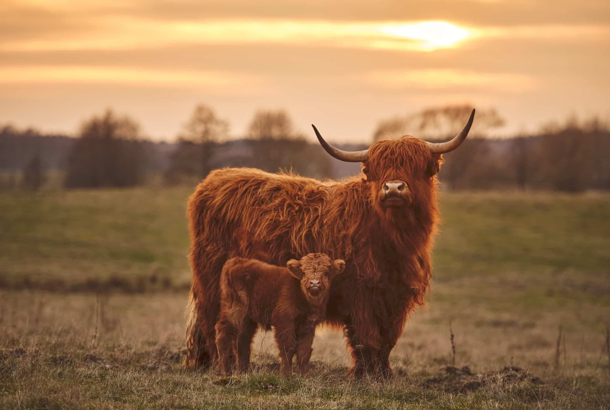
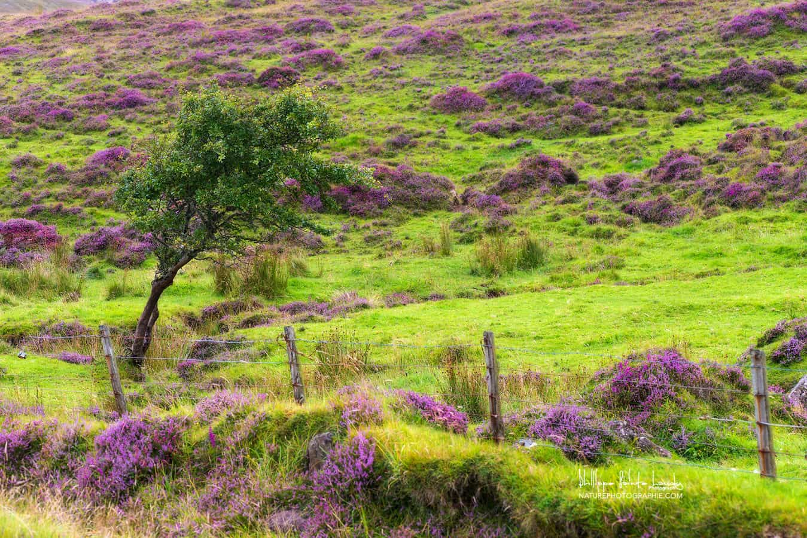

La faune Ecossaise
La faune écossaise terrestre a souffert de la déforestation et de la chasse. Mais les cerfs, chevreuils, loutres, hermines, martres et chats sauvages se rencontrent en abondance, sans oublier la typique Highland Cattle, cette vache à frange et tignasse que l’on voit partout, et les fameux poneys Shetland. Les landes écossaises abritent la grouse, le petit coq de bruyère, le ptarmigan (ou lagopède alpin) et de grands rapaces comme le milan, le balbuzard et l’aigle royal. Sur les îles (Hébrides, Orcades, Shetlands) et les falaises du littoral écossais, se concentrent de grands peuplements d’oiseaux marins, dont les macareux, fous de Bassan, pétrels fulmars, guillemots, cormorans, labbes et goélands. À terre, les phoques gris ou otaries sont nombreux sur les rochers, tandis que dans l’eau, les dauphins mènent leur danse inépuisable. Enfin, dans les montagnes des Highlands et dans les landes, vivent grouses, grands tétras, martres et écureuils, mais aussi cerfs et sangliers. Au sud et au sud-ouest de l’Écosse, on peut voir des faisans et des coqs des bouleaux.

La flore Ecossaise
En Écosse, les forêts couvrent près de 15 % du territoire, ce qui représente la moitié des forêts britanniques. Les plus importantes se situent sur les reliefs du Dumfriesshire, du Galloway et de l’Argyll. Là, les fougères prospèrent dans les sous-bois de chênes et de bouleaux. Sur les pentes montagneuses, les plantations de pins d’Écosse sont en train de reconstituer le domaine forestier qui a été exploité du Moyen-Âge au XXe siècle. Ailleurs, on trouve surtout des landes et des tourbières, composées de bruyères, de fougères, de mousses et de graminées. Au-dessus de 600 m d’altitude, ce sont les plantes alpines et arctiques, reliquat de la dernière période glaciaire, qui prédominent. Aux Shetland, dans l’intérieur des terres, poussent la gentiane violette, la bruyère violine, la mousse et les myrtilles. En Écosse, aux magnifiques paysages naturels répondent aussi des jardins soignés, abrités des vents, qui profitent de la douceur apportée par le Gulf Stream. On y voit de somptueux massifs de rhododendrons, camélias, azalées et même parfois des palmiers, comme à Achamore House, Inverewe Gardens ou encore Colonsay.
